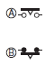

Timers
OMRON provides a range of Analog Timers and Digital Timers, as well as Time Switches for 24-hour, weekly, or annual time control.
|
|
Features |
| Principles |
|
| Engineering Data | Further Information |
|
|
|

Symbols Used in Internal Connection Diagram
| Name | Symbol | Description | |
| Symbol used in catalogs | Symbol defined by JIS | ||
| NO contacts | Normally open contacts (A pair of contacts which are normally open when no relay input is applied.) | ||
| NC contacts | Normally closed contacts (A pair of contacts which are normally closed when no relay input is applied.) | ||
| Transfer contacts | Transfer contacts (NO and NC contacts that have a common contact terminal are collectively called "transfer contacts".) The contacts shown in A and B are all transfer contacts. The NC contact is either on the right side or on the upper side. | ||
| Time-limit operating contacts | A: NO contacts B: NC contacts | ||
| Time-limit resetting contacts |  | A: NO contacts B: NC contacts | |
| Time-limit operation, timelimit resetting contacts | A: NO contacts B: NC contacts | ||
| Manually operated, automatic resetting contact | Contacts that reset when the operator releases their hand. These contacts are used, for example, to operate a pushbutton switch. (Same for pushbutton, pull, and rotating switches.) A: NO contacts B: NC contacts | ||
| Synchron ous motor | A miniature motor which operates in synchronization with the power supply frequency. | ||
| Relay | An electromagnetic relay | ||
| LED | Used to indicate the operating status of the Timer. | ||
[[Inrush Currents for Timers and Time Switches]]
"---" indicates a constant current and therefore the corresponding values are omitted from the table. All the values are approximate values and should therefore only be used as a guide.
Timers (Major Models)
| Model or series | Voltage | Applied voltage | Inrush current (peak value) | Time (see note) * | |
| H3AM-NS/-NSR | 100 to 240 VAC | 264 VAC | 2.74 A | 1.7 ms | |
| H3CA-A series | 24 to 240 VAC or 12 to 240 VDC | 264 VAC | 1.6 A | 0.6 ms | |
| H3CA-8/-8-306 | 200/220/240 VAC | 264 VAC | 1.5 A | 0.6 ms | |
| 100/110/120 VAC | 132 VAC | 780 mA | 5 ms | ||
| 24 VDC | -- | -- | -- | ||
| H3CA-8H/-8H-306 | 200/220/240 VAC | 264 VAC | 1.6 A | 1.6 ms | |
| 100/110/120 VAC | 132 VAC | 1.5 A | 5 ms | ||
| 24 VDC | 26.4 VDC | 1.2 A | 2 ms | ||
| H3CR-A/-A8/-AP | 100 to 240 VAC or | 264 VAC | 780 mA | 1.8 ms | |
| 137.5 VDC | 310 mA | 3.2 ms | |||
| 24 to 48 VAC or | 26.4 VAC | 830 mA | 2.4 ms | ||
| 26.4 VDC | 570 mA | 6.3 ms | |||
| H3CR-A8E | 100 to 240 VAC or | 264 VAC | 1.76 A | 0.1 ms | |
| 137.5 VDC | 550 mA | 0.2 ms | |||
| 24 to 48 VAC/DC | 26.4 VAC | 270 mA | 35 ms | ||
| 26.4 VDC | 270 mA | 31 ms | |||
| H3CR-AS/-A8S | 24 to 48 VAC or 12 to 48 VDC | 26.4 VAC | 370 mA | 2.2 ms | |
| 26.4 VDC | 250 mA | 3.2 ms | |||
| H3CR-F | 100 to 240 VAC or | 264 VAC | 750 mA | 1 ms | |
| 137.5 VDC | 0.5 A | 9.1 ms | |||
| 24 to 48 VAC or | 26.4 VAC | 0.83 A | 10 ms | ||
| 26.4 VDC | 0.57 A | 9.4 ms | |||
| H3CR-H | S series | 100/110/120 VAC | 132 VAC | 1.05 A | 111 ms |
| 200/220/240 VAC | 264 VAC | 1.07 A | 119 ms | ||
| 24 VAC/DC | 26.4 VAC | 1.26 A | 133 ms | ||
| 26.4 VDC | 0.85 A | 137 ms | |||
| 48 VDC | 52.8 VDC | 0.73 A | 112 ms | ||
| 100 to 125 VDC | 137.5 VDC | 0.62 A | 109 ms | ||
| M series | 100/110/120 VAC | 132 VAC | 1.02 A | 364 ms | |
| 200/220/240 VAC | 264 VAC | 1.03 A | 323 ms | ||
| 24 VAC/DC | 26.4 VAC | 1.21 A | 478 ms | ||
| 26.4 VDC | 0.87 A | 560 ms | |||
| 48 VDC | 52.8 VDC | 0.71 A | 384 ms | ||
| 100 to 125 VDC | 137.5 VDC | 0.62 A | 380 ms | ||
| H3DE-MS/F/G | 24 to 230 VAC/DC | 253 VAC | 4.4 A | 0.03 ms | |
| 253 VDC | 2.68 A | 0.03 ms | |||
| 26.4 VDC | 203 mA | 11 ms | |||
| H3DE-H | 200 to 230 VAC | 200 VAC | Approx. 0.8 A | 130 ms | |
| 100 to 120 VAC | 100 VAC | Approx. 0.93 A | 130 ms | ||
| 48 VAC/DC | 48 VAC | Approx. 0.95 A | 130 ms | ||
| 48 VDC | Approx. 0.68 A | 70 ms | |||
| 24 VAC/DC | 24 VAC | Approx. 1.25 A | 140 ms | ||
| 24 VDC | Approx. 0.89 A | 40 ms | |||
| H3DK-M/S/F/G | 24 to 240 VAC/DC | 264 VAC | Approx. 4.69 A | 46.27 ms | |
| 24 VDC | Approx. 0.168 A | 134 ms | |||
| 264 VDC | Approx. 3.64 A | 46 ms | |||
| 12 VDC | 13.2 VDC | Approx. 2.62 A | 418.67 ms | ||
| H3DK-H | 100 to 120 VAC | 132A | Approx. 2.06 A | 1320 μs | |
| 200 to 240 VAC | 264 VAC | Approx. 2.38 A | 677.33μs | ||
| 24 to 48 VAC/DC | 52.8 VAC | Approx. 1.81 A | 1810 μs | ||
| 24 VAC | Approx. 1.68 A | 19.8 ms | |||
| 24 VDC | Approx. 1.16 A | 35.2 ms | |||
| 52.8 VDC | Approx. 2.44 A | 8.84 ms | |||
| H3DS | 24 to 230 VAC or 24 to 48 VDC | 253 VAC | 3 A | 1 ms | |
| 26.4 VDC | 0.5 A | 4 ms | |||
| H3DT-N/L/A/F/G | 24 to 240 VAC/DC | 264 VAC | 7.04 A | 500 μs | |
| 24 VDC | 336 mA | 5.36 ms | |||
| 264 VDC | 4.92 A | 704 μs | |||
| H3DT-H | 100 to 120 VAC | 132 VAC | 2.08 A | 21.6 μs | |
| 200 to 240 VAC | 264 VAC | 4.08 A | 23.2 μs | ||
| 24 to 48 VAC/DC | 52.8 VAC | 1.09 A | 19.2 μs | ||
| 24 VDC | 668 mA | 63.2 ms | |||
| 52.8 VDC | 1.96 A | 15.2 ms | |||
| H3FA-A | 24 VDC | 26.4 VDC | 1.8 A | 0.01 ms | |
| 12 VDC | 13.2 VDC | 1.5 A | 0.01 ms | ||
| 6 VDC | 6.6 VDC | 1.1 A | 0.05 ms | ||
| 5 VDC | 5.5 VDC | 1.1 A | 0.05 ms | ||
| H3FA-SA | 24 VDC | 26.2 VDC | 1.8 A | 0.01 ms | |
| 12 VDC | 13.2 VDC | 1.5 A | 0.01 ms | ||
| 6 VDC | 6.6 VDC | 1.1 A | 0.05 ms | ||
| 5 VDC | 5.5 VDC | 1.1 A | 0.05 ms | ||
| H3M series | 200/220/240 VAC | 264 VAC | 1.2 A | 0.5 ms | |
| 100/110/120 VAC | 132 VAC | 620 mA | 0.4 ms | ||
| 110 VDC | -- | -- | -- | ||
| 100 VDC | -- | -- | -- | ||
| 48 VDC | 52.8 VDC | 5 A | 1 ms | ||
| 24 VDC | 26.4 VDC | 2.6 A | 1 ms | ||
| 12 VDC | 13.2 VDC | 1.3 A | 1 ms | ||
| H3RN series | All specifications except for 24 VAC | -- | -- | -- | |
| 24 VAC | 26.4 VAC | 200 mA | 3 ms | ||
| H3Y series | All specifications except for 12 VDC | -- | -- | -- | |
| 12 VDC | 13.2 VDC | 350 mA | 0.4 ms | ||
| H3YN series | All specifications except for 12 VDC | -- | -- | -- | |
| 12 VDC | 13.2 VDC | 600 mA | 1 ms | ||
| H5AN series | 100 to 240 VAC | 264 VAC | 23 A | 1 ms | |
| 100 VDC | 110 VDC | 8 A | 2 ms | ||
| 12 to 24 V DC | 26.4 VDC | 15 A | 6.5 ms | ||
| H5CN series | 100 to 240 VAC | 264 VAC | 800 mA | 1 ms | |
| 12 to 48 VDC | 52.8 VDC | 400 mA | 1 ms | ||
| H5CX-A[]-N series | 100 to 240 VAC | 264 VAC | 4.8 A | 0.5 ms | |
| H5CX-A[]D-N | 24 VAC or 12 to 24 VDC | 26.4 VAC | 9.5 A | 1 ms | |
| 26.4 VDC | 6.6 A | 1 ms | |||
| H5CX-L[]-N series | 100 to 240 VAC | 264 VAC | 5.3 A | 0.4 ms | |
| 24 VAC or 12 to 25 VDC | 26.4 VAC | 6.4 A | 1.4 ms | ||
| 26.4 VDC | 4.4 A | 1.7 ms | |||
| H5CX-B[]-N series | 12 to 24 VDC | 26.4 VDC | 4.4 A | 1.7 ms | |
| H5CX-A/-L series (previous models) | 100 to 240 VAC | 264 VAC | 5.3 A | 0.4 ms | |
| 24 VAC or 12 to 24 VDC | 26.4 VAC | 6.4 A | 1.4 ms | ||
| 26.4 VDC | 4.4 A | 1.7 ms | |||
| H5CX-B series (previous models) | 12 to 24 V DC | 26.4 VDC | 6 A | 1.2 ms | |
| H5CZ series | 100 to 240 VAC | 264 VAC | 4.6 A | 0.4 ms | |
| 24 VAC or 12 to 24 VDC | 26.4 VAC | 9.5 A | 1 ms | ||
| 26.4 VDC | 6.6 A | 1 ms | |||
Time Switches (Major Models)
| Model or series | Voltage | Applied voltage | Inrush current (peak value) | Time (see note) * |
| H4KV-DSA-R | 100 to 200 VAC | 240 VAC | 4.8 A | 1.1 ms |
| H4KV-DSA (previous models) | 100 to 200 VAC | 240 VAC | 0.7 A | 0.5 ms |
| H5L-A | All specifications | -- | -- | -- |
| H5S-W series | 100 to 240 VAC | 264 VAC | 3.1 A | 0.2 ms |
| 24 VDC | 26.4 VDC | 1.3 A | 2.7 ms | |
| H5S-Y series | 100 to 240 VAC | 264 VAC | 3.1 A | 0.2 ms |
| 24 VDC | 26.4 VDC | 1.4 A | 2.7 ms | |
| H5S series | 100 to 240 VAC | 264 VAC | 2.5 A | 0.3 ms |
| 24 VDC | 26.4 VDC | 1.1 A | 3 ms | |
| H5F series | 100 to 240 VAC | 264 VAC | 2 A | 0.3 ms |
* The time of the inrush current is measured in the range shown in the following waveform.

© Copyright OMRON Corporation 2007 - 2016. All Rights Reserved.